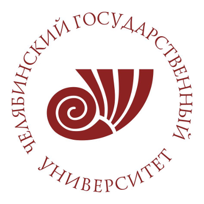

Профессиональный профиль
Кандидат физико-математических наук, младший научный сотрудник кафедры физики конденсированного состояния Челябинского государственного университета. Научная траектория связана с первопринципным и data-driven моделированием магнитных, термоэлектрических и магнитокалорических материалов.
теория конденсированного состояниямашинное обучение в материаловедениисильно коррелированные системысплавы Гейслераспинтроникамагнитокалорические и термоэлектрические материалы